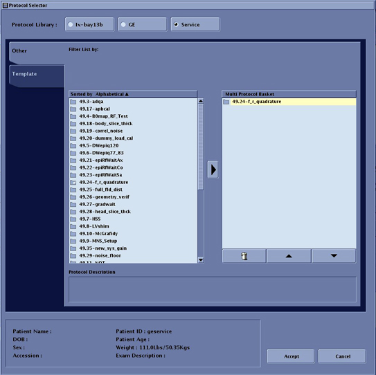

- 00000018WIA30F64E20GYZ
- id_131061073.2
- Oct 11, 2021 3:56:10 PM
Forward Reverse Quadrature Check
Prerequisites
| Required persons | Preliminary requirements | Procedure | Finalization |
|---|---|---|---|
| 1 | Not Applicable | 30 minutes minutes | Not Applicable |
About this task
This section determines the quadrature balance of the quad coil and the phase splitter network. In this test, the body TLT sphere phantom is scanned with the quadrature coil using two different methods. First, an image is taken with the quadrature coil as presently connected. Next, the cables to the quadrature switches are reversed, and the phantom is scanned a second time using the same protocol. The resulting images are analyzed to verify proper quadrature drive function and cable configuration. This procedure consists of the following:
-
Body forward/reverse quadrature scans
-
Forward/reverse quadrature test image analysis
Body Forward/Reverse Quadrature Scans
Procedure
- To prepare the system for scan, set the following parameters:
- Click New Pt and then specify these settings:
Figure 1. Scan I/O Page 
-
ID: geserviceEnter
-
Name: body f/r quadEnter
-
Weight (lb): 111Enter
-
- Set patient protocols to Service.
Figure 2. Protocol Selector 
- In the Patient Protocols section, click Service and then click Other.
- Locate 49_24-f_r_quadrature, click the protocol name, and then click the arrow in between to add it to the Multi Protocol List or remove it.
- Click Accept to download the series.
- Click New Pt and then specify these settings:
- Start the exam, then select Save Rx.
-
Select Manual Prescan from the Scan option drop-down list.
-
Set TG=100, confirm R1=13 and R2=28, and then select Done to exit.
-
Select Scan.
Figure 3. Saving Scan Parameters 
-
- Disable RF output by placing the RF Enable switch on the DTX1
exciter, located in the top of the PEN cabinet, into the Disable (down)
position.
Figure 4. RF ENB Switch Down 
Forward/Reverse Quadrature Test Image Analysis
About this task
This analysis procedure applies only to body scans.
Procedure
Finalization
Procedure
- Disable RF output by placing the RF Enable switch on the DTX1 exciter into the Disable (down) position.
- Enable RF output by placing the RF Enable switch on the DTX1 exciter into the Enable (up) position.
- Perform a check scan (good-bye scan) to verify that the system is operating properly. See Check Scan.